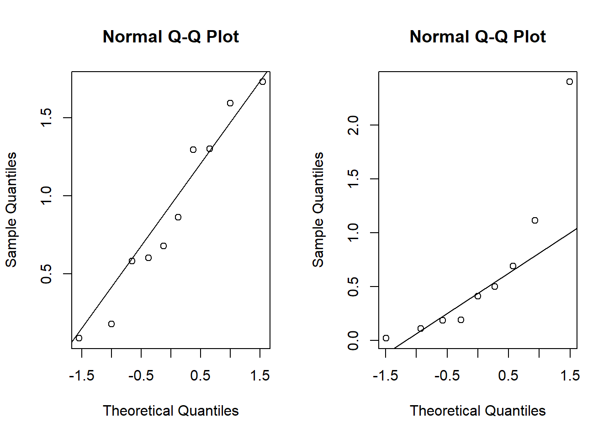

Chapter 11 Bootstrap
11.1 Intro to the bootstrap
For hypothesis testing and confidence intervals, there is a “statistic” whose sampling distribution is required
For example, to test \(H_0:\mu = \mu_0\) using a normal random sample \(X_1, ..., X_n\) with \(X_i \stackrel{iid}{\sim}N(\mu, \sigma^2)\) the test statistic
\[T = \frac{\bar X - \mu_0}{S/\sqrt{n}}\]
has a \(t\) distribution with \(n-1\) degrees of freedom given the null hypothesis is true.
Only in very simple problems can we determine an “exact” test statistic. For example, in the two-sample t-test with unknown, unequal population variances, the T statistic is only approximate.
We often rely on assumptions (like normality) or large sample sizes (CLT) in order to derive approximate (or asymptotic) distributions of statistics.
The bootstrap (in a manner similar to Monte Carlo) tries to approximate the distribution of a test statistic using simulations.
For a distribution with cdf \(F\), we are interested in a parameter \(\theta = \phi(F)\), and functional of \(F\).
Examples:
1. Mean - \(\phi(F) = \int xdF(x)\)
2. Anything else that is a function of moments, like variance
3. Median - \(\phi(F) = \inf\{x: F(x)\geq 0.5\}\)…
Given data \(X_1, ..., X_n\) the empirical CDF (think of this as an estimate of \(F\)) is \[\hat F(x) = \frac{1}{n}\sum_{i=1}^n 1\{X_i \leq x\}.\]
A natural estimate of \(\theta\) is the “plug-in” estimator \(\hat\theta = \phi(\hat F)\).
Given the previous setup of CDF and empirical CDF, suppose we want to estimate \(\theta\). If we could somehow simulate from \(F\), then our knowledge of Monte Carlo suggests the following:
1. Simulate many data sets, say \(M\), of size \(n\): \(X_{1,1}, ..., X_{n,1}\), …, \(X_{1,M}, ..., X_{n,M}\).
2. From the \(M\) data sets, compute \(\hat{\theta}_i\) for \(i=1, ..., M\).
3. Then, our many estimates should given us an idea of the mean and the variance of \(\hat{\theta}\).
This actually works when we know the distribution of the test statistic. In the one-sample t-test for a normal mean, the test statistic has a \(t(n-1)\) distribution. So, if we sample from this distribution many times, we will be able to find the rejection region for the hypothesis test by computing Monte Carlo estimates of the \(t(n-1)\) quantiles, but this is rather trivial…
qt(0.025,9)## [1] -2.262157qt(0.975,9)## [1] 2.262157quantile(rt(100000,9), 0.975)## 97.5%
## 2.260443Of course, we (usually) cannot simulate from \(F\) because it is unknown (depends on unknown parameters).
Bootstrap idea: Replace simulation from \(F\) with simulation from \(\hat F\)!
Note: it is easy to simulate from \(\hat F\), it’s just simulation from a discrete uniform distribution with probabilities \(1/n\) on each data point.
Suppose we are given the following two samples:
set.seed(3214354)
x <- rexp(10,1)
y <- rexp(9,0.8)
round(x,2)## [1] 0.18 1.30 0.09 1.30 1.73 0.86 1.59 0.60 0.58 0.68round(y,2)## [1] 0.02 0.50 0.41 0.19 0.19 0.69 2.40 1.11 0.11We could use the t-test, but wait…
par(mfrow = c(1,2))
qqnorm(x)
qqline(x)
qqnorm(y)
qqline(y)
shapiro.test(x)##
## Shapiro-Wilk normality test
##
## data: x
## W = 0.94146, p-value = 0.5694shapiro.test(y)##
## Shapiro-Wilk normality test
##
## data: y
## W = 0.77085, p-value = 0.009449What “test statistic” should I use to test \(H_0:\mu_X = \mu_Y\)? Why not \(\bar X - \bar Y\)?
test.statistic <- mean(x) - mean(y)
boot.test.statistic <- rep(NA, 10000)
for(i in 1:10000){
boot.x <- sample(x,replace = T)
boot.y <- sample(y, replace = T)
boot.test.statistic[i] <- mean(boot.x)-mean(boot.y)
}
test.statistic## [1] 0.2657391quantile(boot.test.statistic,0.025)## 2.5%
## -0.345881quantile(boot.test.statistic,0.975)## 97.5%
## 0.792484m <- median(boot.test.statistic)
approx.p.value = ifelse(test.statistic > m, sum((boot.test.statistic-m) > (test.statistic - m))/10000 + sum((boot.test.statistic-m) < (m-test.statistic))/10000, sum((boot.test.statistic-m) > (m-test.statistic))/10000 + sum((boot.test.statistic-m) < (test.statistic-m))/10000 )
approx.p.value ## [1] 0.972611.2 Bootstrap Confidence Intervals
A variety of methods are used to construct confidence intervals using the bootstrap distribution of an estimator. We’ll discuss the percentile, basic, and Studentized methods, although several others are available, including the bias-corrected and accelerated (BCa) intervals computed by default in R’s boot package.
Suppose the bootstrap samples \(\hat\theta_1, \ldots, \hat\theta_B\) are available. The simplest bootstrap interval estimate is given by the percentile method, which defines the \(100(1-\alpha)\%\) CI to be the \(\alpha/2\) to \((1-\alpha/2)\) sample quantiles of \(\hat\theta_1, \ldots, \hat\theta_B\). There are good arguments against the percentile method, but we won’t wade into the details presently. Those arguments tend to favor the basic bootstrap method, which defines the \(100(1-\alpha)\%\) CI to be the interval \((2\overline \theta - \hat\theta_{1-\alpha/2}, \, 2\overline \theta - \hat\theta_{\alpha/2})\), which is twise the sample mean of the bootstrapped estimates minus the \((1-\alpha/2)\) and \(\alpha/2\) sample quantiles of those bootstrapped estimates \(\hat\theta_1, \ldots, \hat\theta_B\).
The last method we’ll discuss is the Studentized bootstrap. The idea of the method is to mimic the usual z- or t-test pivotal quantity \(\frac{\hat\theta - \theta}{se(\hat\theta)}\). First, compute \(\hat\theta\) for teh original data. Then, perform the following nested bootstrap, for \(b\) in 1 to \(B\) do:
1.Resample the data with replacement to generate the \(b^{th}\) bootstrap data set
a. for this \(b^{th}\) data set compute the point estimate \(\tilde \theta_b\)
b. Resample the resamples! Generate \(K\) nested bootstrap resamples sample of data. For each of them compute \(\tilde\theta_{b,k}\) for \(k=1, \ldots, K\).
c. Estimate \(se(\tilde \theta)\) as the standard deviation of \(\tilde\theta_{b,k}\) for \(k=1, \ldots, K\).
d. Keep the studentized value \(q_b = \frac{\tilde\theta_b - \hat\theta}{se(\tilde\theta_b)}\)
2. Let \(se(\hat\theta)\) be estimated by the sample standard deviation of \(\tilde\theta_1, \ldots, \tilde\theta_B\).
3. Define the Studentized interval as
\[(\hat\theta - q_{1-\alpha/2}se(\hat\theta), \, \hat\theta - q_{\alpha/2}se(\hat\theta))\]
where \(q_\alpha\) is the \(\alpha\) sample quantile of the Studentized \(q\) values.
set.seed(3214354)
x <- rexp(10,1)
y <- rexp(9,0.8)
round(x,2)## [1] 0.18 1.30 0.09 1.30 1.73 0.86 1.59 0.60 0.58 0.68round(y,2)## [1] 0.02 0.50 0.41 0.19 0.19 0.69 2.40 1.11 0.11my.boot <- function(x,y, B, K, alpha){
hattheta <- mean(x) - mean(y)
tildetheta <- rep(NA,B)
q <- rep(NA,B)
for(b in 1:B){
indices1 <- sample(10,10,replace = TRUE)
indices2 <- sample(9,9,replace = TRUE)
xstar <- x[indices1]
ystar <- y[indices2]
tildetheta[b] <- mean(xstar) - mean(ystar)
tilde2 <- rep(NA,K)
for(k in 1:K){
indices1 <- sample(10,10,replace = TRUE)
indices2 <- sample(9,9,replace = TRUE)
xstar2 <- xstar[indices1]
ystar2 <- ystar[indices2]
tilde2[k] <- mean(xstar2)-mean(ystar2)
}
q[b] <- (tildetheta[b] - hattheta)/sd(tilde2)
}
intv <- hattheta - sd(tildetheta)*quantile(q,c(1-alpha/2,alpha/2))
return(as.numeric(intv))
}
my.boot(x,y,1000,50,0.05)## [1] -0.6147748 0.857609611.3 Bootstrapping linear models
When we have only one sample of iid data, bootstrapping is straightforward: simply sample with replacement n times from the original data to obtain a single bootstrap-resampled data set. Repeat many times, recording the estimate corresponding to each resampled set. When there is more “structure” present in the data we need to think carefully about how that structure should be treated by the resampling procedure.
In linear models, i.e., the Gauss-Markov model, for each response \(Y_i\) there is a corresponding covariate vector \(X_i\). How should these pairs \((Y_i, X_i)\) be treated by the resampling procedure?
One method for bootstrapping a linear model is called row-resampling. Imagine binding the \(n\times 1\) column of responses \(Y\) to the \(n\times p\) matrix of covariates \(X\) and then resampling rows with replacement. We can do this by sampling the integers \(1, \ldots, n\) with replacement, each time taking the corresponding row of \((Y, X)\) as the bootstrap resample. Row resampling treats the pairs \((Y_i, X_i)\) as random, but this is not always reasonable. For example, in a two-sample experiment in which we apply a treatment to 10 of 20 subjects at random and keep the remaining 10 as a control group, row resampling will produce resampled data sets with more than ten in one of the two groups and fewer in the other, which is not how the experiment was performed.
When the design is fixed, e.g., we have precisely ten subjects in each group, a different bootstrap method, called residual boostrap, makes more sense. The residual bootstrap starts with the residuals \(e = y - \hat y = y - X_i\hat\beta\). We resample the residuals to obtain \(e^\star = (e_1^\star, \ldots, e_n^\star)^\top\). Next, we compute the bootstrapped responses, \(y_i^\star = X_i\hat\beta + e_i^\star\). Finally, we compute \(\hat\beta^\star\) using \(X\) and \(y^\star\). This way, the design matrix \(X\) remains the same throughout the bootstrap procedure, preserving the structure of the experiment.
Example: Consider the following experiment to evaluate the effect of a bacterial infection on the lifespan of Guinea pigs as measure in days. First, we apply the ro-resampling method. Admittedly, this method makes little sense if we intend for the experiment to have 64 pigs in the control group and 58 in the treatment group.
pigs <- read.csv('guinea_pigs.csv')
my.lm <- lm(Time~Treatment, data = pigs)
my.lm##
## Call:
## lm(formula = Time ~ Treatment, data = pigs)
##
## Coefficients:
## (Intercept) TreatmentControl
## 242.5 102.7my.lm$coefficients## (Intercept) TreatmentControl
## 242.5345 102.6843n <- length(pigs$Pig)
r.r.coefs <- matrix(NA,1000,2)
row.resample.boot <- function(indices){
data.star <- pigs[indices,]
my.lm <- lm(Time~Treatment, data = data.star)
return(as.numeric(my.lm$coefficients))
}
for(i in 1:1000){
r.r.coefs[i,] <- row.resample.boot(sample.int(n,n,TRUE))
}
r.r.means <- colMeans(r.r.coefs)
percentiles1 <- quantile(r.r.coefs[,1], c(0.05,0.95))
percentiles1## 5% 95%
## 218.0000 268.3603percentiles2 <- quantile(r.r.coefs[,2], c(0.05,0.95))
percentiles2## 5% 95%
## 49.40079 154.59927c(2*r.r.means[1] - percentiles1[2], 2*r.r.means[1] - percentiles1[1])## 95% 5%
## 216.4051 266.7653c(2*r.r.means[2] - percentiles2[2], 2*r.r.means[2] - percentiles2[1])## 95% 5%
## 50.48009 155.67856Next, we implement the residual-bootstrap method. Note the two methods give very similar \(90\%\) basic bootstrap CIs for \(\beta_2\) but disagree a bit for \(\beta_1\).
pigs <-
read.csv('guinea_pigs.csv')
my.lm <- lm(Time~Treatment, data = pigs)
my.lm##
## Call:
## lm(formula = Time ~ Treatment, data = pigs)
##
## Coefficients:
## (Intercept) TreatmentControl
## 242.5 102.7my.lm$coefficients## (Intercept) TreatmentControl
## 242.5345 102.6843n <- length(pigs$Pig)
resids <- my.lm$residuals
r.r.coefs <- matrix(NA,1000,2)
resid.boot <- function(indices){
resids.star <- resids[indices]
y.star <- cbind(rep(1,n), ifelse(pigs$Treatment=="Control",1,0))%*%matrix(as.numeric(my.lm$coefficients),2,1) + resids.star
data.star <- pigs
data.star$y.star <- y.star
my.lm <- lm(y.star~Treatment, data = data.star)
return(as.numeric(my.lm$coefficients))
}
for(i in 1:1000){
r.r.coefs[i,] <- resid.boot(sample.int(n,n,TRUE))
}
r.r.means <- colMeans(r.r.coefs)
percentiles1 <- quantile(r.r.coefs[,1], c(0.05,0.95))
percentiles1## 5% 95%
## 205.1938 281.0952percentiles2 <- quantile(r.r.coefs[,2], c(0.05,0.95))
percentiles2## 5% 95%
## 50.20677 154.69151c(2*r.r.means[1] - percentiles1[2], 2*r.r.means[1] - percentiles1[1])## 95% 5%
## 203.5823 279.4838c(2*r.r.means[2] - percentiles2[2], 2*r.r.means[2] - percentiles2[1])## 95% 5%
## 52.21648 156.70123